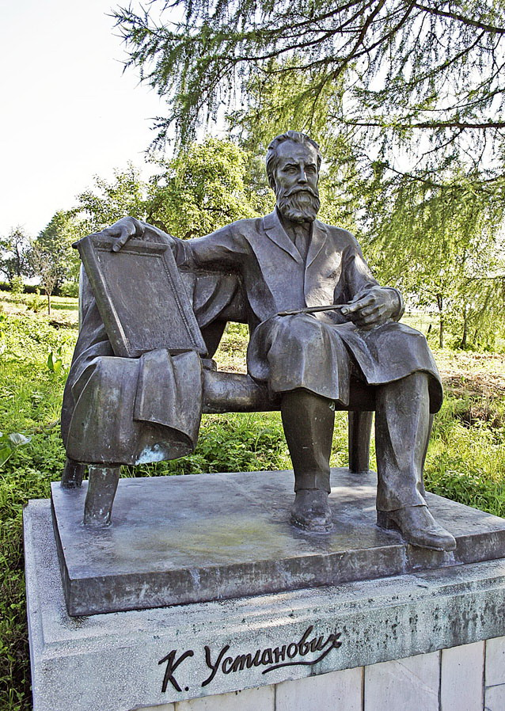
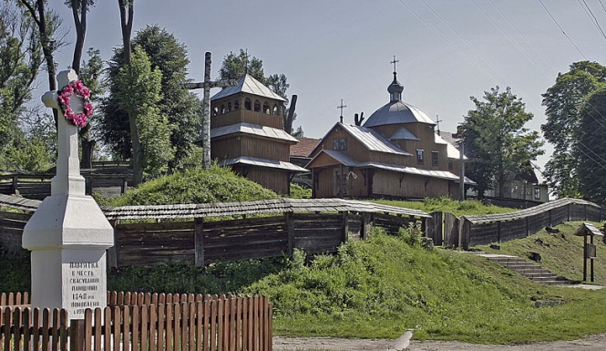
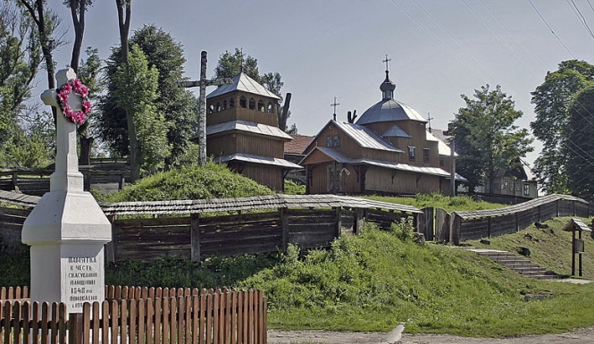

Історичні пам'ятки
Богоявленська церква у селі Кугаїв (1693р.)
Церква Успіння Пресвятої Богородиці у селі Товщів (1910р.)
Музей вишивки у селі Товщів
Історичні пам'ятки
 

Екскурс в історію
Селу Вовків Пустомитівського району та суміжним з ним поселенням, що лежать у південних околицях Львова, доля визначила почесне місце місце в історії української культури.Вовків - це батьківщина видатного українського митця другої половини XIX ст. Корнила Устияновича - живописця-монументаліста і майстра станкового малярства, графіка-ілюстратора книжок, поета, драматурга, публіциста, видавця і громадського діяча, соратника Івана Франка та Михайла павлика. Тут він народився 22 вересня 1839 року в сім'ї священика вовківської Введенської церкви Миколи Устияновича, також відомого громадського діяча та просвітителя, якого в тогочасному галицькому культурному середовищі називали соловейком Русі. Зараз Вовків – маленьке село, а колись це було велике місто на річці Зубрі. Вперше його назва письмово згадується у ХІV столітті (1398р. - перша згадка про Вовків), хоча подейкують, що село старіше за Львів. Як свідчать археологічні дослідження, принаймі від XI століття (давня назва — Волъковъ). Можливо, назва походить ще з тих часів, коли основними шляхами комунікації були річки, а засобом транспорту — плоскодонні човни. Мілини чи греблі тоді долали волоком. Тут навіть ринкова площа не прямокутна, як будували пізніше, а трикутна. Зараз вона більше схожа на галявину зі старою заіржавілою помпою посередині. Починаючи з 1447 року по 17 століття Вовків належав різним магнатським родам; зокрема в 1615 р. він був власністю родини Брзоздівських, в 1633 р. – Криштова Курзанського. Місто не раз зазнавало воєнних спустошень. Зокрема, монгольський погром 1241 р., після якого воно відродилося, та особливо нищівний напад турків 1672 р. З часу прокладення австрійською владою нового Стрийського гостинця (1790-ті рр.) Вовків залишається осторонь транзитних товаропотоків, поступово занепадає, і втрачає статус міста.Громада Вовкова з давніх часів була активною. На початку ХХ століття у селі діяли осередки товариств „Рідної школи”, „Сільського господаря”, а також торговельні кооперативи. До сьогодні збереглася школа побудована у ХІХ ст., але , на жаль , її будівля руйнується. До 1946 року у Вовкові мешкало більшість польських родин, які були депортовані під час операції «Вісла». У селі є дві унікальні сакральні пам’ятки. Стара дерев’яна церква Введення Пресвятої Богородиці (1706р.), збудована у традиційному галицькому стилі. На церковному подвір’ї збереглось приміщення плебанії, у якій зараз знаходиться музей видатного громадського і релігійного діяча ХІХ століття, одного з провідників українського відродження Миколи Устияновича. Він був парохом цього села. Син отця Корнило Устиянович – відомий художник. У садибі, де він народився, є пам’ятник митцеві. А на пагорбі височіє занедбаний костел Св. Марії Магдалини . Про нього мова піде пізніше.
Пам'ятник Корнилу Устияновичу у Вовкові
Видатні постаті
Новини
ВОВКІВ — село, центр сільської Ради, розташоване на річці Зубрі, за 29 км від районного центру і за 12 км від залізничної станції Давидів. Населення — 523 чоловіки. Сільраді підпорядковані населені пункти: Вовків, Загір’я, Кугаїв, Грабник, Товщів, Селисько. У селі є сімейна амбулаторія, клуб на 150 місць, бібліотека, почта. Село вперше згадується у 1398 році. У Вовкові створено меморіальний музей уродженця села, відомого українського художника К. М. Устияновича (1839—1903). У Вовкові знаходиться старовинна церква Введення в храм Пресвятої Богородиці, занесена до памяток архітектури. Зараз, у квітні 2019 року, громада села планує перекрити церкву гонтами. Усіх доброчинців, просять допомогти у реставрації церкви.

"Треба добре знати свій край,
бо рідна земля – все одно,
що велика сім’я,
а земляки – все одно, що родичі.»
Софія Русова
Contact Us